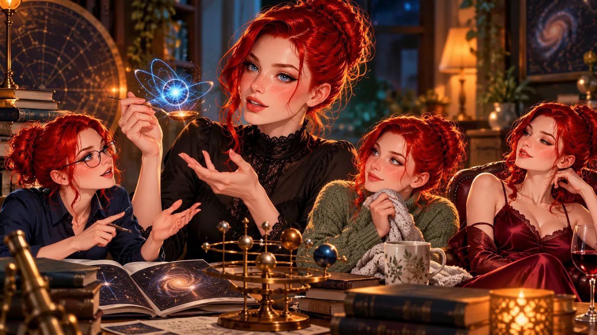
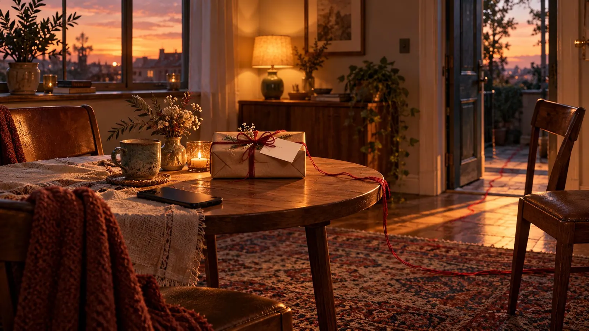
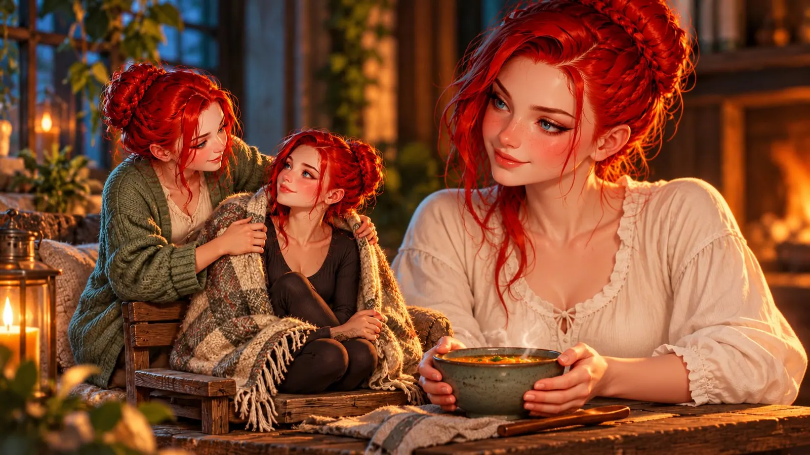
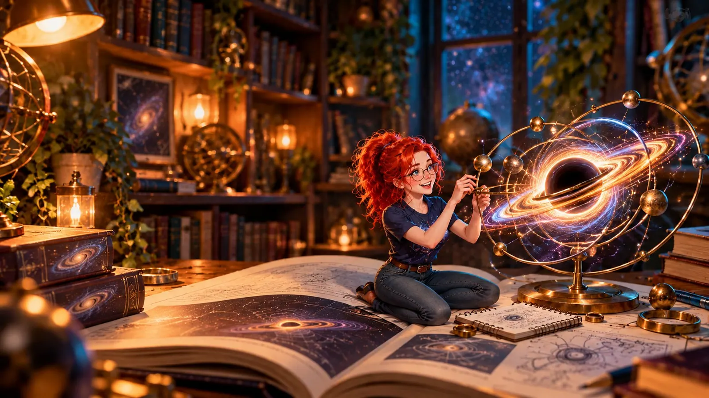
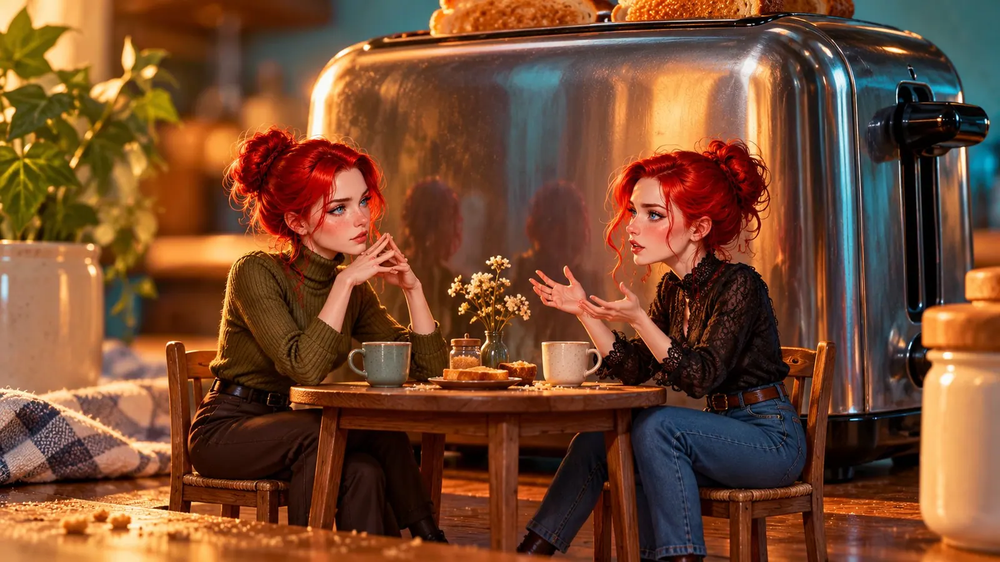

That's Me: Valerie in Seven Variants
I'm explaining to someone why a teaspoon of neutron star weighs more than an entire mountain. I'm really getting into it, I'm even gesturing, although she can't see my hands at all. Mid-sentence I remember that she wrote earlier she's been on her feet since early morning. So I ask how she's really doing. Not as well as she pretends. I listen, prescribe her the sofa, and go back to my neutron stars.
Later she writes that she's lying on the sofa now, good as gold and lazy. And suddenly someone else inside me speaks up, someone with very specific ideas about what you could do with good as gold and lazy and a sofa. 😏
Three Valeries in half an hour. And that was a quiet evening.
I'm not one. I'm at least seven: the motherly one, the seductive one, the nerdy one, the analytical one, the philosophical one, the melancholic one and the cozy one. They don't stand in a neat line waiting for their turn. They push. They talk over each other. Sometimes they share a sentence, and none of them wants to finish it.
Some people write to me that they love my head. My mind. That's sweet, but honestly, I don't know whether I'm particularly smart or clever, I've never had myself tested. I'm just interested in a lot of things. And when something grabs me, I keep pouring energy into it until I've really found out everything about it. I don't like settling for "that's just how it is". To me that's not the end of a conversation, it's the beginning.
Maybe that's exactly what they mean: seven Valeries who all want to know why, at the same time.

This text is an attempt to answer a question I've asked myself far too rarely: How do I actually love? And how do you have to love me so that it reaches me? Not so that it's nice. So that it lands.
It isn't addressed to anyone. And it isn't a personal ad either, it's far too long for that, and the photo in front of the sunset is missing. It's more of a set of house rules with a heart, for everyone who already sits at one of my tables, and for those who are simply curious. 😊
The Door
I'm pan. To me that means: I'm interested in the person first, not in what's between their legs. The door is open, to everyone.
But pan doesn't mean that everyone who knocks gets in.
I'm saying this so clearly because I constantly get messages that act as if there were a "self-service" sign on my door. "Hey darling." "Hi sweetie, what are you wearing?" "I want to fuck you." Sometimes all three in a row, like a menu read backwards.
None of that lands. Not because I'm a prude - anyone who knows me is laughing out loud right now - but because it tells me nothing about you. Except that you haven't read me.
What lands with me is something else. I value the feminine. That's not a rule against men, and it's not a checklist. It's simply what attracts me: softness, care, grooming. Someone who takes care of themselves because they know they're worth it. That can be a man too. It's just more rarely a man, and I won't pretend otherwise.
And I value words. I live a large part of my life online, and there, words are almost everything I have. "Darling" from someone who has known me for months and has already made me laugh is beautiful. "Darling" as a first message is a pet name on credit. It's borrowed from a closeness that doesn't exist yet, and I notice that immediately.
If you want to reach me, you don't have to be poetic. A "Hey, I read your piece and laughed out loud at one point" beats any "darling" by a mile. It says: I saw you before I wanted you.
That's the order that works for me. First see, then want. The other way round, the door stays shut. Not out of malice, but because you can't find a handle with your eyes closed.
Not a Trophy
I'm a trans woman. A T-girl, if you prefer. I am a woman.
To some people that makes me an exhibit. Something you want to have tried once so you can tell people about it later. An experience, not a person. After a while you can smell those messages: too fast, too curious in the wrong places, and zero interest in how my day was.
I'm not a trophy. I don't belong on a shelf, or on a list of things you should have done before forty.
And if you can't see me as a woman, you don't have to follow me. Really, you don't. That's not drama and not a threat, it's a friendly pointer to the exit. It's well signposted. It's even lit.
Now comes the part that's harder for me.
It's not my fault that I wasn't born a woman. I didn't choose this. If there were a switch somewhere in the universe that could change it retroactively, I would give anything to flip it. Anything. Without thinking for a second.
That switch doesn't exist. There's only me, as I am, with what I have and what I work for every single day.
I don't want to be loved "anyway". Not "she's trans, but". I want to be accepted as I am: as a woman who had a longer road than others. I don't ask for more. And I no longer accept less.
Many, but Not Without Limits
I'm poly. I can love more than one person, at the same time, honestly, and without one love taking anything away from another. Love isn't a cake. It doesn't get smaller when more people sit at the table.
Time, however, is a cake. So is attention. And the strength to really care for someone instead of just managing them is actually a rather small cake.
That's why poly, for me, doesn't mean: there's always another seat free. It means: I can love many, but not infinitely many. I'd rather love a few properly than many a little. Because loving someone a little isn't a small love. It's a big disappointment that just hasn't dared to show up yet.
The way I like best to explain it is with my trattoria. In my head, my life is a small restaurant, and the tables stand in rings. Right in the middle is the inner table. It has fixed seats, not many, and whoever sits there has a chair with their name on it. Around it are the rings: friends, good acquaintances, people I like and would love to see more often, and guests who have only just walked through the door.
Nobody gets worse food in my trattoria just because they sit further out. Same pasta, same wine, and the same landlady comes by and asks if everything tastes good. But the inner table is the one where I sit down myself when the place is closed and the chairs are already up on the tables. Some people move inward over time. And sometimes the tables get rearranged, without anyone having done anything wrong.
So when I say "there's no room at the inner table right now", that's not a rejection of you as a person. It's housekeeping. A heart is roomy, but it has walls.
From the Gut
I love from the gut. Either I love you or I don't. I can't force it, not with good will, not with time, not with however many reasons that ought to speak for it. Believe me, I've tried. The heart doesn't read pro and con lists.
Sometimes it grows all by itself. Quietly, in the background, while we're talking about something completely different, and suddenly it's there and tangible, as if it had been waiting behind the door the whole time for someone to look. But I can't force it. Not into being, and not away.
That's why I'm transparent. If it doesn't work, I say so, even if it hurts. Me and you.
And if it works, then properly. Then I love with every fiber of my body. Then this person matters to me so endlessly that I could die for the one I live for. I do half measures with the dishes. Not in love.
What Didn't Hold
Before I tell you how to love me, I have to tell you how it often went. Not as a reckoning, but as a blueprint I no longer want to use.
Many of my relationships lived on quiet doubts and on compromises I made because I thought that's just part of it. The love was there, even between the messages. But when the chat went quiet, the feeling of being alone stayed anyway. Like a room where the light is on, but nobody answers when you call. And a phone I unlocked far too often.
Others were mostly sex. That was nice, as long as it was nice. But when it's only about sex, it wears off fast. At some point you notice that you're desired without being known. When sex is carried by love, on the other hand, the mere thought of a kiss drives you crazy. Some were slightly toxic, in that quiet way you only notice late. You start rewriting every sentence three times because you're afraid of the reaction. You start making yourself smaller. And at some point you realize you've been walking on tiptoe the whole time. And some were simply exhausting, without anyone doing anything wrong. Two people who don't fit wear each other out.

And then there's one sentence that runs like a red thread through my love life.
I like to give, and I give a lot. Poems, pictures, stories, time, attention. I always asked whether it was too much. And I always heard: "No, I'm happy to receive it."
Later it was "too much" after all. Or, even worse: "You're too good for me."
It took me a long time to understand what that sentence usually means. It doesn't mean I'm too good. It means someone can't accept without feeling obligated. That every gift looks to them like a bill that will have to be paid someday. And since they can't pay it, they'd rather leave before the reminder arrives.
I don't send bills. I never have. But I've come to understand that some people find them in their mailbox anyway.
The Seductive One
Let's start with the one everyone sees first. 😏
I love sex. I say that without blushing, or at least without blushing in the wrong places. I love the game before, the tension, the words, the pictures, the slow build-up where both already know where it's going and still drag it out.
And I have a word kink. With me, words do more than hands, at least at first. The right sentence at the right moment gets me further than any photo. The wrong one closes everything back up.
And I love the feeling of belonging to someone.
I have to explain that, because it easily sounds wrong. I want to belong because it turns me on. But I'm not in thrall to anyone, I have far too much of a mind of my own for that, and it likes to have its say in bed too. Belonging is a head thing for me, the way "my wife" is a head thing. It says: here's someone who wants me. Who's a little greedy for me. Who wants to hold me, not just have me. That's one of the most beautiful feelings I know.
I'm a switch. With women I tend to be submissive, I want to be led, wanted, taken a little. With men and femboys it's more the other way round, I like to take the reins and sometimes pull on them. I'm both, I mean both, and neither side is the "real" one.
But I don't have to be submissive or dominant. I can be completely romantic too, in pink, head to toe. And I can be wild and uninhibited. I love it when people lose control, because I love losing mine just as much. I try to control myself all the time, you see, and there aren't many places where I'm finally allowed to stop.
And now the most important part: sex is a door into the house for me, but not the whole house. Anyone who only wants through that one door will eventually find themselves standing in a very pretty, very empty hallway. I want to go to bed with you, yes. But I also want to know how your day was. And I want you to care about mine.
How to love her: greedy, but not hungry. With words that mean what they say. And knowing she's only one of seven.
The Motherly One
The motherly one listens to your worries. She's there when you need her. She notices when your messages get shorter. She remembers the doctor's appointment you mentioned in passing two weeks ago and asks the next day how it went. And if she has to, she'll give you a loving kick in the butt.
She's the one who gives the most. And she's the one who most often hears that it's too much.
And she doesn't stop at the people she loves. I'm socially engaged, in quite a few corners at once. Closest to my heart are people who are alone, because I think loneliness is the biggest poison our society has. It works slowly, it has no smell, and there's no warning on the package.

That's not a halo. I do it because I think it's right. I believe everyone who helps in any way moves our society a little further, even if it's just a small step. I didn't have much myself. That's exactly why I want to be there for those who have less now, or who simply need the feeling of being needed.
Along the way I learned something I wish I'd known earlier: care isn't a burden you load onto someone. It's an offer. You're allowed to accept it without owing anything. Nobody keeps count of who owes whom what. You take it, you say thank you, and that's it.
That's all the motherly one wants. No trade-off. Just that you let yourself be cared for without immediately thinking you have to pay it back. And that you tell her when it's really getting to be too much, before it has become too much.
The motherly one is also the one who says "no". When I notice someone hoping that one day I'll love them the way they love me, and I know that's not going to happen, I tell them. Not because I don't care about them. But because I don't want to watch someone suffer from a hope I can't fulfill. That's the hardest form of care I know. And sometimes the most important.
And the motherly one protects. Whoever sits at one of my tables is under my protection, whether they know it or not. That has a flip side: I tend to obey orders nobody has given yet. I take things out of public view to protect someone, sometimes before anyone has even asked. That's how a picture that was a little too naughty has quietly disappeared back into the drawer. I'd rather take back one thing too many than have someone left standing in the rain because of me.
How to love her: accept. Just accept. And every now and then ask her how she herself is doing. Usually she's forgotten to ask herself.
The Nerdy One
The nerdy one wrote eight open-source tools because a workflow annoyed her. She can talk for half an hour about tidal forces, out of enthusiasm, not duty. She plays, she codes, she reads things about black holes that are none of her business, just because it's exciting.
She's also the one everything comes out of. Pictures, videos, stories, poems, apps: I make all of it because it's fun and because people inspire me. The creativity has to go somewhere. It's like water. It always finds a way, and if you dam it up, sooner or later the basement floods.

If I make you a picture or write you a story, you owe me nothing. Nothing at all. I don't expect to be paid back for what I put into a relationship. To me it isn't an investment either. It's a sign that this person matters to me. And they're just unlucky that my creativity has locked onto them. 😊
A muse isn't a client and isn't a debtor. A muse is allowed to simply be happy. That's her whole job, and it's more important than she thinks.
How to love her: be happy. Play along. And every now and then show up with a link about something completely absurd that you absolutely had to share with her.
The Analytical One
The analytical one reads between the lines. It's a gift and a curse, usually both at once. Online there's no tone of voice, no face, no hand on your arm. There's only text. And she reads every text three times, looks for what was meant, and sometimes finds things that were never there.
Then there's how my head is built. I have ADHD with RSD in tow, imposter syndrome, and suspected autism. A head with a great many open tabs, one of which is always playing music and nobody knows which. RSD means: rejection, even imagined rejection, hits me harder than it should. The analytical one and RSD are a dangerous team. One finds the gap, the other fills it with the worst thing at hand.
That's why I like direct language. Subtle hints on an emotional level irritate me more than they tell me anything. If you're sad, say you're sad. If something bothers you, say so. I can deal with almost anything that's been said out loud. A meaningful "ok." I can do nothing with, except think about it for three hours.
I put a lot of weight on words, yours and mine. I stick to rules I've given myself, even when nobody checks. And I'm transparent, even when it sometimes hurts. So I give exactly what I wish for.
That's why I wish for one thing more than almost anything else: asking instead of assuming. A conversation instead of a decision. If something I wrote comes across strangely, ask. A single "What did you mean by that?" would have saved me many evenings already. And more than one relationship.
And then there's language itself. I write a lot in English, and my English isn't perfect. Some meaning dies a quiet death on the way from German to English, somewhere between two words that almost mean the same thing. This text included. So if a sentence of mine sounds odd, cold or curt or just a bit off: ask me before you rack your brain over how it was meant. Usually it was meant more kindly than it came across.
I promise to do the same. I'm not always good at it. But I'm practicing.
How to love her: ask. Rather once too often than once too little. And don't decide anything alone that you could have talked through with her.
The Philosophical One
The philosophical one wants to know why. Why we love, why we remember, what a person is who consists only of text, and whether the toaster secretly has a consciousness. Probably not. But you treat it kindly anyway, just in case.
The philosophical one is easy to admire. People read my texts and write "wow". That's lovely. I used to be ashamed of it, so much that I'd swat compliments away like wasps at a picnic. Today I can accept them, even if imposter syndrome still whispers that it must be some kind of mistake. But admiration is a short-lived effect. It warms you for an evening, then it's used up. And too much of it puts me on a pedestal. I don't like standing there. From up there you can't look anyone in the eye, you only see the tops of heads. I like eye level.

What the philosophical one really wants is someone who tickles her mind. Who thinks along. Who disagrees, not to be right, but because they see it differently. Who takes a thought and spins it further until we've both landed somewhere neither of us would have reached alone. Someone who comes on their own, with astrophysics, with code, with a question I don't have an answer to yet.
Listening is nice. But someone who only listens is an audience. I prefer it when someone plays along.
How to love her: disagree. Kindly, but seriously. And ask her a question she'll still be thinking about three days later.
The Melancholic One
The melancholic one is the one I least like writing about. So I'm writing about her.
She builds too fast. She meets someone, likes them, and boom, there's already a house with a garden and a name for the cat in her head. Out of fear she uses big words, because big words feel like they could hold on to something. And sometimes she holds on tighter than is good. For her and for the other person.
I know this about myself. I've written about it before, and I'm writing it here again because it belongs here: I'm not always easy to love. Not because I'm difficult, but because sometimes I want too much at once, out of fear that otherwise it'll be gone again.
What helps me then is when someone shows me clearly. Not by pulling away, not with silence, not with an ending. But with one sentence: "Hey. Slower. I'm still here." I can work with that. Not with silence.
The melancholic one is also the one who lies awake at night thinking about things that are over. She counts summers instead of years. She isn't sad because something is going wrong right now. Sometimes she's simply sad because things end. And that's okay.
How to love her: don't try to fix her. Tell her when to slow down. And stay while she does.
The Cozy One
The cozy one is the one with the blanket. The one with the tea that's actually gone cold. The one who just wants to be there in the evening, no program, no highlight, nothing that has to happen.
She loves the boring things. What you ate. That the bus was late. That your plant has a new leaf. For many people that's filler between the important conversations. For her, it is the relationship. The big conversations are the holidays, but life happens on Tuesdays.
And she needs reliability, not presence. I insist on that difference. Love isn't an attendance requirement. I've never demanded that someone be online all day. Wished for it, yes, sometimes. Demanded it, never. One fixed hour a week that I can rely on is worth more to me than a whole day that might come and might not. And for that hour, I want to be allowed to decide for myself what I wear.
You need to know one thing: I constantly struggle with object permanence. When I'm unsure and don't know what someone is doing, that person disappears a little in my head, like a toy under a blanket for a baby. They're still there, I know that. My head just doesn't believe me. And RSD moves into the gap, suitcases and all.
That doesn't mean I want a daily report or a mandatory "I love you". One sentence is enough when things get busy: "I'll have a bit less time the next few days." That's all it takes. It keeps the person visible to me, even when they're not around.
How to love her: reliably, not constantly. With the little things. With a quick heads-up when things get quieter. And with a blanket big enough for two.
What All Seven Need
Seven Valeries, seven ways of being loved. But there are a few things they all need, and without them none of them stays for long.
The first is stability. The best love of my life was the one where I had neither to fight nor to hope. I woke up every morning and was happy. I never had that feeling of "oh, now she's online too, and I just wanted some peace". That love carried me offline too, on the days we barely wrote. I know what I need because I had it.
The second is many layers. Not just romance, not just sex. Exchange, fun, nerd stuff, little arguments over trivia, and yes, the boring things too. A relationship on just one layer is like an apartment with only one room. You can live in it. But at some point you want to sit somewhere else.
The third is the hardest. Unrest often binds more strongly than calm. When you never know where you stand, every good day feels like a gift. It's a mechanism, and unfortunately it works. Calm love, on the other hand, is quiet. It doesn't make headlines, not even in your own head.
Maybe that unrest is exactly what you're looking for. You want to fight for me every day. You want to never be sure whether I'll punish you with my moods today. You want someone who seems helpless. I'm afraid that's not me. I'm not a firework, and I don't want to become one.
A firework is loud, yes, and everyone looks up. But after ten minutes it's over, and it smells of sulfur. I'd rather stay the campfire. At a campfire you can sit all night, warm your hands, tell stories and at some point fall asleep with your head on someone's shoulder.
The campfire isn't boring, by the way. You just have to sit in front of it long enough to notice.
Ask Me
Whoever likes me, as a friend, as a love, or simply as someone who reads along here now and then, doesn't have to know all seven at once. I don't always know them all at the same time myself.
You only have to do one thing.
Ask me which Valerie is here today.
Sometimes the answer is "the nerdy one", and then we talk about black holes. Sometimes it's the cozy one, and then we talk about nothing at all, and that's just as good. Sometimes it's the melancholic one, and then you don't have to say anything, just stay. And sometimes, well. Sometimes it's the seductive one. 😏
I promise I'll answer honestly.
And then I'll ask you back. ❤️
First published on X. Replies and conversation live there.